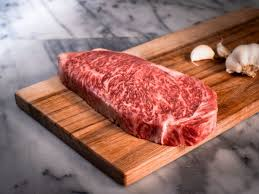

神戸牛（”神戸肉”、”神戸ビーフ”とも言う）は出荷の際に神戸肉流通推進協議会がその生育環境、血統、肉質などにおいて厳しい基準を満たした但馬牛に与える名誉ある称号です。
上記の通りそもそも厳しい基準がある但馬牛をさらに基準を増やし厳格な審査に合格した牛だけが”神戸牛（神戸肉・神戸ビーフ）”を名乗ることができるのです。
日本三大和牛と呼ばれる神戸牛、松阪牛、近江牛の中でも一番厳しい審査基準を設けており2009年アメリカのメディアにも海外メディアにも世界で最も高価な9種類の食べ物として神戸牛が取り上げられています。